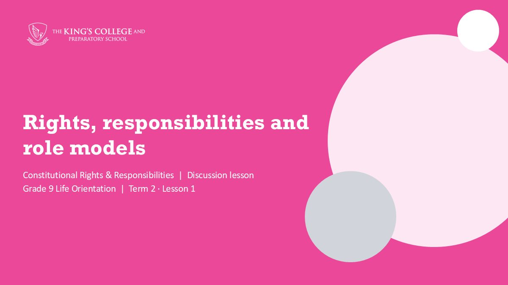

Term 2 · Lesson 1 · Discussion lesson
Rights, responsibilities and role models
Start here
Today I will
- Name the constitutional values and link rights to responsibilities
- Explain what Chapter 9 institutions do
- Identify a role model who lives out constitutional values
Think of someone you really look up to. What do they DO that earns your respect?
Words to know
- Constitution
- The supreme (highest) law of South Africa. No law or action may go against it.
- Bill of Rights
- Chapter 2 of the Constitution: the rights of everyone in South Africa.
- Constitutional values
- The basic beliefs the Constitution is built on, such as human dignity, equality and freedom.
- Responsibility
- A duty that comes with every right: to respect the same right in other people.
- Chapter 9 institutions
- Independent bodies set up by the Constitution to protect our democracy and our rights.
- Role model
- A person whose example others follow, in a good or a bad way.
Slides

Videos
Notes
South Africa is a constitutional democracy. That means the Constitution, not any person or political party, is the highest authority in the country. It gives every person rights, and it expects every person to respect the rights of others. In this lesson you learn what the Constitution stands for, who protects it, and how ordinary people, including teenagers, can be role models who live out its values.
The Constitution: our supreme law
The Constitution of the Republic of South Africa was adopted in 1996 and came into effect in February 1997. It was written after the end of apartheid, when the laws had treated people unequally because of their race. The Constitution set out to heal the divisions of the past, to build a society based on democratic values, social justice and human rights, to improve the quality of life of every citizen, and to build a united nation.
The Constitution is the supreme law: any law or action that goes against it is invalid. The Constitutional Court is the highest court on constitutional matters and can strike down laws that go against the Constitution.
The founding values
Section 1 of the Constitution lists the values that the whole country is built on. You should be able to name them and explain them in your own words.
| Value | What it means in everyday life |
|---|---|
| Human dignity | Every person has worth and must be treated with respect, whatever their background. |
| Equality | Everyone is equal before the law and may not be unfairly discriminated against. |
| Freedom | People may think, speak, believe, move and choose freely, within the law. |
| Non-racialism and non-sexism | No one is treated better or worse because of their race or gender. |
| Supremacy of the Constitution and the rule of law | Everyone, including the President, must obey the Constitution and the law. |
| Democracy | Adults vote in regular, free and fair elections; there are many parties; government must be accountable, responsive and open. |
The Bill of Rights
Chapter 2 of the Constitution is the Bill of Rights. It protects the rights of everyone in South Africa, not only citizens. Some rights you should know:
- Equality (section 9): no unfair discrimination because of race, gender, religion, disability, language and other grounds.
- Human dignity (section 10): your worth must be respected and protected.
- Freedom and security of the person (section 12): including the right to be free from all forms of violence.
- Freedom of religion, belief and opinion (section 15).
- Freedom of expression (section 16): but NOT hate speech, incitement to violence or propaganda for war.
- Children's rights (section 28): including protection from abuse, neglect and exploitation.
- Education (section 29): everyone has the right to a basic education.
Rights are not unlimited. Section 36 allows rights to be limited when it is reasonable and fair, for example to protect other people's rights. Your freedom of expression does not allow you to threaten or humiliate someone online.
Rights and responsibilities
Every right comes with a responsibility: to respect the same right in other people. If everyone demanded their rights but nobody took responsibility, rights would mean very little.
| Right | Responsibility |
|---|---|
| Equality | Treat everyone fairly; don't exclude or mock people who are different from you. |
| Human dignity | Respect others' worth: no bullying, insults or humiliating posts. |
| Freedom of expression | Share your views respectfully; never spread lies, hate speech or threats. |
| Education | Attend school, do your work and don't disrupt other people's learning. |
| Freedom of religion | Respect other people's right to hold different beliefs. |
| A safe environment (section 24) | Don't litter or waste; look after school and public spaces. |
Chapter 9 institutions
Chapter 9 of the Constitution sets up independent institutions to support and protect our democracy. They are independent, which means they answer to the Constitution and report to Parliament, not to the government of the day. They must be impartial and act without fear, favour or prejudice.
| Institution | What it does |
|---|---|
| Public Protector | Investigates complaints when government officials abuse power, act unfairly or waste public money. |
| South African Human Rights Commission (SAHRC) | Promotes and protects human rights; anyone can lay a complaint when their rights are violated. |
| Commission for Gender Equality (CGE) | Promotes equality between women and men and investigates gender discrimination. |
| CRL Rights Commission | Protects the rights of cultural, religious and language communities. |
| Auditor-General | Checks whether government departments spend taxpayers' money correctly. |
| Electoral Commission (IEC) | Runs free and fair national, provincial and municipal elections. |
Example: Advocate Thuli Madonsela served as Public Protector from 2009 to 2016. Her office investigated powerful people without fear, which showed South Africans that no one is above the law.
Role models who live the values
A role model is someone whose example other people follow. Role models can be positive or negative. A positive role model does not have to be famous: a parent, a coach, a teacher or an older learner can be a powerful example.
| Positive role model | Negative role model |
|---|---|
| Treats everyone with respect and dignity | Mocks, bullies or looks down on others |
| Is honest and takes responsibility | Lies, cheats or blames others |
| Stands up for what is right, even when it costs them | Goes along with the crowd or abuses power |
| Serves others and uses their talents to help | Uses people for their own gain |
| Lives a healthy, disciplined life | Glamorises substance abuse or reckless behaviour |
South African examples: Nelson Mandela chose reconciliation instead of revenge; Archbishop Desmond Tutu spoke out for justice and led the Truth and Reconciliation Commission; Albertina Sisulu worked for the dignity of women and families; Dr Imtiaz Sooliman founded Gift of the Givers, which helps people in disasters regardless of race or religion.
Why a constitution matters
Before 1994, laws in South Africa treated people differently because of their race. Millions of people could not vote, choose where to live or get the same education. The Constitution was written so that this could never happen again. Because it is the supreme law, even Parliament cannot pass a law that takes away the rights in the Bill of Rights without following very strict rules. Courts, Chapter 9 institutions, a free media and ordinary citizens all help to make sure that the Constitution is respected in real life, not only on paper.
How you can live out the values at school
- Dignity: refuse to laugh at, share or forward posts that humiliate someone.
- Equality: include learners who are new, different or alone in groups and at break.
- Freedom of expression: disagree respectfully in class debates; listen before you answer.
- Democracy: take part in class and learner council elections and hold leaders accountable.
- Ubuntu: 'I am because we are'. Your well-being is linked to the well-being of others.
Case study: Aarav's class election
Aarav was nominated for the Grade 9 learner council. Another candidate promised his friends extra privileges if they voted for him and spread a rumour about a girl who was also standing. Aarav decided to campaign differently: he made a short video about three things he would work on (a homework club, better access to the library for a learner who uses crutches, and a no-bullying pledge) and asked Mr Pretorius to explain how real elections are kept free and fair by the IEC. Aarav lost by a few votes, but he congratulated the winner and joined the homework club committee anyway. Mia told him afterwards that he was her role model for the week, because he had shown that how you win or lose matters.
Questions to think about: Which constitutional values did Aarav live out? How did the other candidate go against them? Why can someone who loses still be a positive role model?
Worked exam answers
Question: Explain why every right comes with a responsibility. Use ONE example. (1 x 2) (2)
Answer: Rights only work when everyone respects the same rights in other people ✓, e.g. my right to freedom of expression means I must not spread hate speech or lies about others ✓.
Question: Analyse how a positive role model can influence a teenager's behaviour. (1 x 4) (4)
Answer: A positive role model shows respect, honesty and hard work in everyday life ✓ which teenagers tend to copy because they admire that person ✓ especially when the role model is someone close to them, such as a coach or parent ✓ so the teen is more likely to make responsible choices and treat others with dignity ✓.
Be able to name and explain the founding values, link a right to its responsibility, state what ONE Chapter 9 institution does, and compare a positive and a negative role model. Higher-order questions ask you to analyse how a role model or a right helps to build a respectful community.
My rights are safe only when I respect the same rights in others.
In class: Role model check
- Choose a South African role model who lives out constitutional values (a public figure or someone in your community).
- Name TWO values they live out and give one real example of each.
- Write ONE thing a negative role model does that goes against these values.
- Link it to Task 2: what evidence will you show in your presentation?
Test yourself
- Name THREE constitutional values.
- Which responsibility goes with freedom of expression?
- Name ONE Chapter 9 institution and what it does.
Show answers
1. Any three: human dignity, equality, freedom, non-racialism, non-sexism, supremacy of the Constitution / rule of law, democracy. 2. Not spreading lies, hate speech or threats; respecting other people's views. 3. e.g. the Public Protector investigates abuse of power; the SAHRC protects human rights; the IEC runs elections.
Finished early?
Read part of the Bill of Rights and connect it to real school life.
- Open the Constitution on the government website (www.gov.za) and find Chapter 2, the Bill of Rights.
- Choose one right (e.g. section 9, 10, 16 or 29) and write it in your own words.
- Write the responsibility that comes with it, with one school example.
- Name one person (famous or someone you know) who lives out this value, and say how.